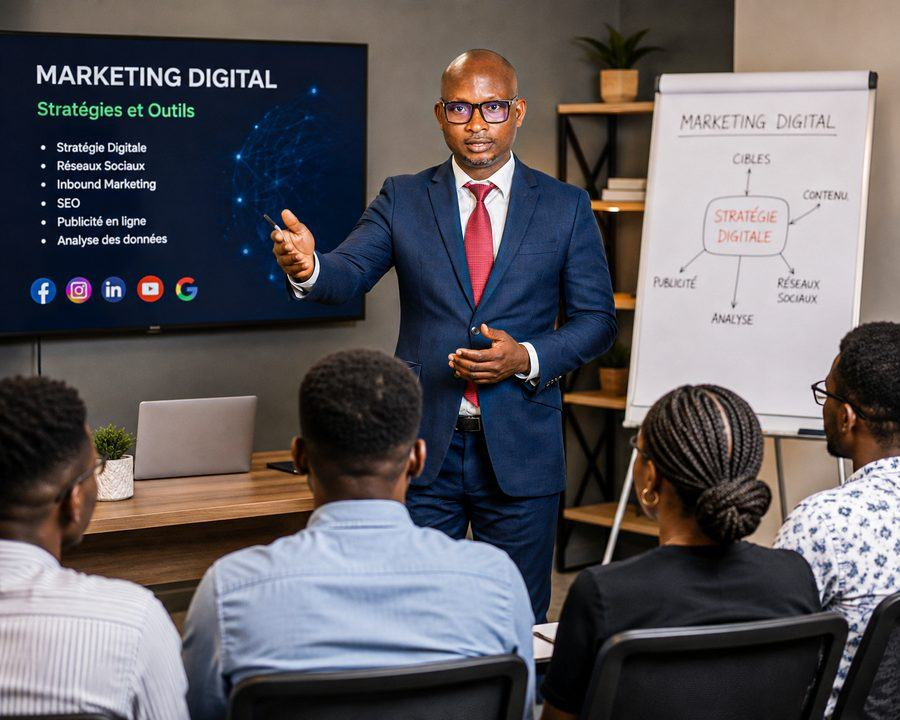

Développeur web, designer UI/UX et gestionnaire de campagnes digitales. J'accompagne PME, indépendants et startups de la conception à la croissance en ligne.
Développement web, design UI/UX et marketing digital : je couvre l'ensemble de votre présence en ligne, du code à la communication, sans multiplier les intermédiaires.
Du code à la communication, vous n'avez qu'une seule personne à contacter pour comprendre votre projet dans son ensemble.
Formé dans l'environnement Microsoft (SharePoint/SPFx) à la CDC Bénin, j'applique cette exigence à chaque projet, quelle que soit sa taille.
Je réponds sous 24h et je reste joignable après la livraison — un projet digital continue de vivre après sa mise en ligne.
Sites, identités visuelles et campagnes déjà livrés pour des entreprises réelles — pas seulement une promesse.

Parce qu'une entreprise n'a pas besoin de dix prestataires différents pour exister en ligne. Elle a besoin d'une seule personne capable de comprendre son projet dans son ensemble, du code à la communication — c'est exactement l'approche que je propose.
Oui. Je travaille avec des PME, des indépendants et des startups qui veulent une présence digitale cohérente — pas seulement un site qui existe, mais un site qui travaille vraiment pour eux.
On commence par un échange pour comprendre votre projet, vos objectifs et vos contraintes réelles. Je vous propose ensuite une solution claire — périmètre, délais, tarif — avant de démarrer quoi que ce soit.